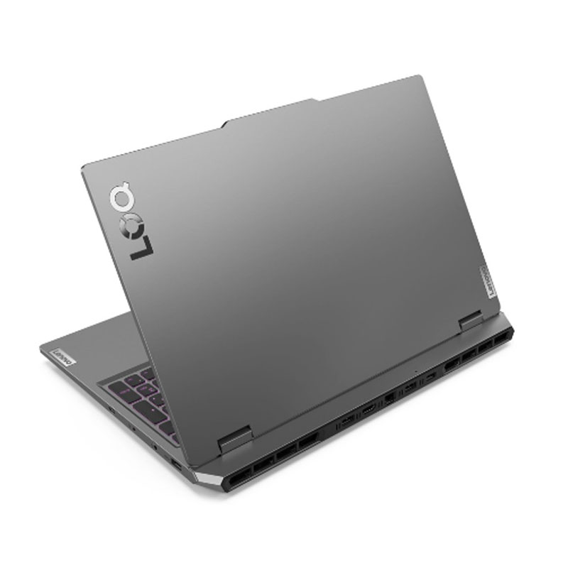
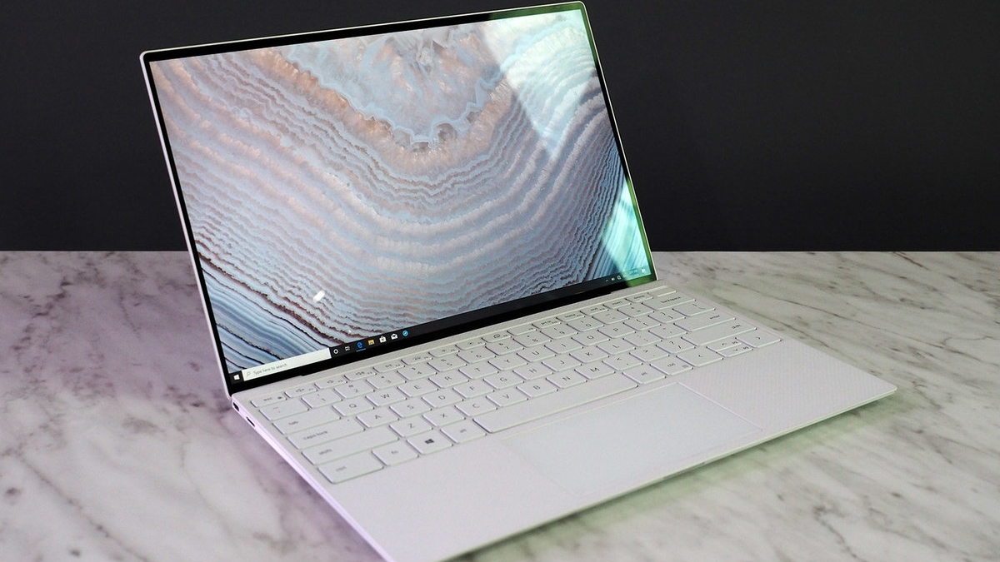
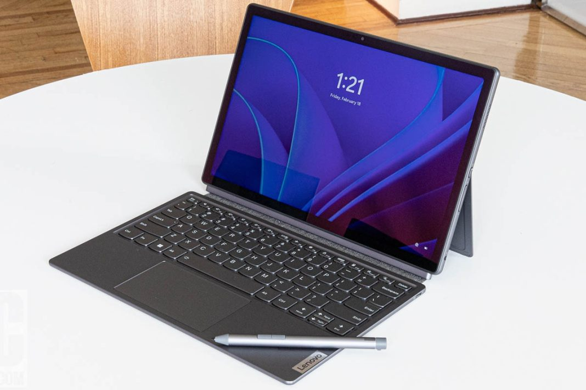

1. Laptop standar
Laptop Standar/Entry-Level adalah laptop yang dirancang untuk kebutuhan sehari-hari seperti mengetik, browsing internet, menonton video, dan tugas ringan lainnya. Laptop jenis ini biasanya memiliki spesifikasi yang cukup sederhana, dengan prosesor dan RAM standar, serta harga yang terjangkau. Cocok untuk pelajar atau pengguna dengan kebutuhan dasar.

2. Laptop Gaming
Laptop Gaming dibuat khusus untuk bermain game berat dengan performa grafis tinggi. Laptop ini dilengkapi dengan GPU kelas atas, prosesor yang kuat, layar dengan refresh rate tinggi, dan sistem pendingin yang canggih. Selain untuk gaming, jenis ini juga ideal untuk rendering grafis dan editing video.

3. Laptop Ultrabook
Ultrabook adalah laptop tipis dan ringan dengan desain modern, cocok untuk mobilitas tinggi. Dengan baterai tahan lama, penggunaan SSD, dan performa efisien, ultrabook sangat cocok untuk profesional yang sering bepergian. Contohnya adalah MacBook Air dan Dell XPS

4. Laptop Workstation
Laptop Gaming dibuat khusus untuk bermain game berat dengan performa grafis tinggi. Laptop ini dilengkapi dengan GPU kelas atas, prosesor yang kuat, layar dengan refresh rate tinggi, dan sistem pendingin yang canggih. Selain untuk gaming, jenis ini juga ideal untuk rendering grafis dan editing video.

5. Laptop 2 in 1
Laptop 2-in-1 menggabungkan fungsi laptop dan tablet dalam satu perangkat. Layar sentuh dan engsel fleksibel memungkinkan laptop ini diubah menjadi mode tablet. Cocok untuk pengguna yang membutuhkan perangkat fleksibel untuk bekerja dan hiburan.
